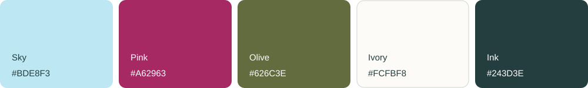

A LITTLE LOOK BEHIND THE JOURNEY
The visual
notebook.
Desktop dreams. Pocket-sized moments.
A collection of screens,
made to explore at your pace.
PICK A LITTLE PERSPECTIVE
No postcards here just yet.
Try a different word or reset your filters.
THE LITTLE DETAILS
Soft colors. Clear intentions.
DM Serif Display brings the journal character. Manrope keeps the small things readable.
